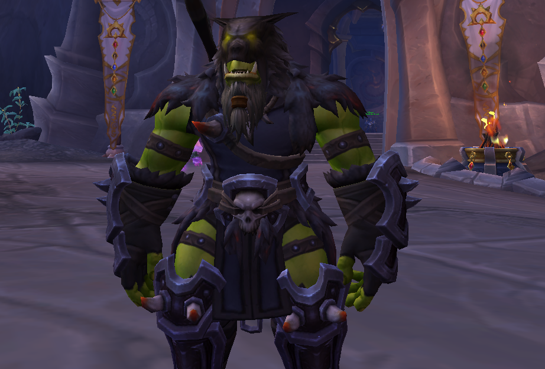
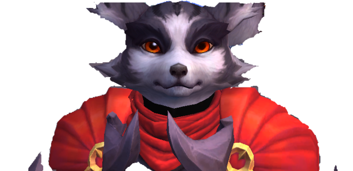

Gamberr foi o segundo caçador que criei no jogo e primeiro que desenvolvi no jogo. Curiosamente o
primeiro caçador foi um goblin, porem nao consegui sair da ilha inicial e resolvi criar outro
personagem e, assim, criei Gamberr.
Gamberr

sobre o personagem

Crash foi um dos muitos personagens que criei apenas por criar, mas assim como gamberr, foi um dos
unicos que desenvolvi. Criei um ladino vulpera apenas por meme mas me apaixonei pela gameplay de ladino.
Crash
ravina brado guerreiro
A Ravina Brado Guerreiro é um campo de batalha clássico de World of Warcraft (WoW), onde a Aliança e a
Horda se enfrentam em uma luta intensa pelo controle de bases e recursos. Situada em uma área de
paisagem aberta e montanhosa, a Ravina Brado Guerreiro (Warson Gulch, em inglês) coloca dois times de 10
jogadores em uma disputa no estilo captura de bandeira, um dos modos PvP mais conhecidos do jogo.
Praia fervilhante
Praia Fervilhante (Seething Shore, em inglês) é um campo de batalha dinâmico de World of Warcraft (WoW),
introduzido na expansão Battle for Azeroth, onde jogadores da Aliança e da Horda competem pela extração
de um precioso recurso chamado Azerita. Situado em uma ilha tropical banhada pelo oceano, a Praia
Fervilhante apresenta um ambiente dinâmico, com foco na movimentação rápida e controle estratégico de
recursos.
vale alterac
O Vale Alterac é um dos campos de batalha mais icônicos de World of Warcraft (WoW), onde se desenrolam
batalhas épicas entre as facções da Aliança e da Horda. Situado em uma região montanhosa cercada de
neve, o Vale Alterac oferece uma experiência estratégica e dinâmica de combate em grande escala,
exigindo coordenação, táticas de guerra e gerenciamento de recursos para assegurar a vitória.
invernia
Invernia (Wintergrasp, em inglês) é um campo de batalha de mundo aberto em World of Warcraft (WoW),
introduzido na expansão Wrath of the Lich King. Localizado no continente de Nortúndria, Invernia é uma
vasta região nevada que oferece um combate PvP épico em grande escala, onde centenas de jogadores da
Aliança e da Horda podem se envolver em lutas massivas pela conquista da Fortaleza de Invernia.